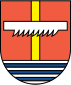

<div id="header">

	<div class="wrapper">
		<div class="logo">
			
			<div>
				<h1>Hvozdnica</h1>
				<p>Prvá písomná zmienka 1250</p>
			</div>
		</div>
		<ul class="links">
			<li><a href="#">Pútnicke miesto</a></li>
			<li><a href="#">Fotogaléria</a></li>
			<li><a href="#">CVČ</a></li>
			<li><a class="active" href="#">Javornícke ozveny</a></li>
			<li><a href="#">FSk Javorníček</a></li>
			<li><a class="accent" href="#">Rezervácie</a></li>
		</ul>
	</div>

	<div class="menu"></div>

</div>

<div class="title">
	<div class="wrapper">
		
		<h1>Javornícke ozveny</h1>
		<h2>Festival folklórnych skupín<br>z dolín Javorníkov</h2>
	</div>
</div>
